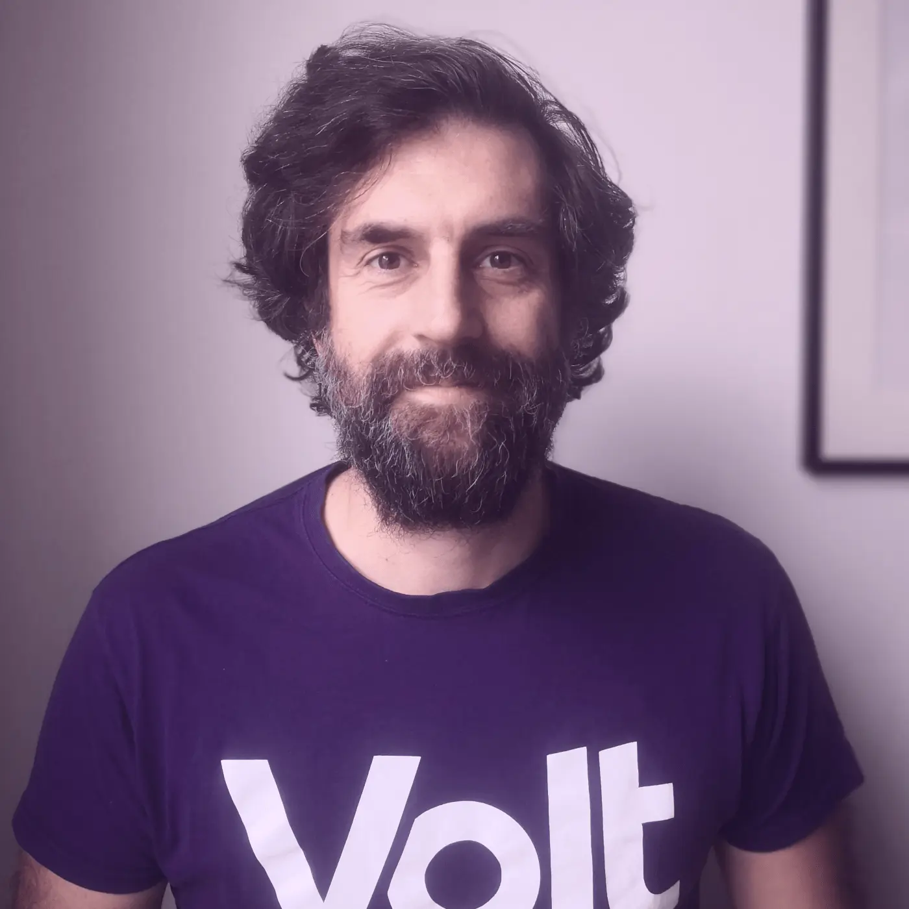
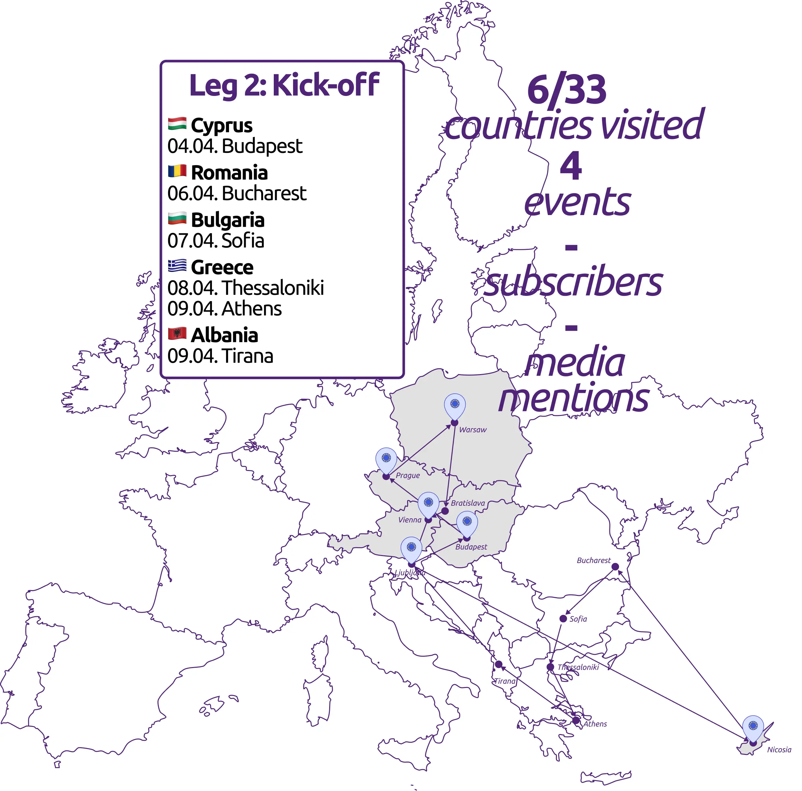
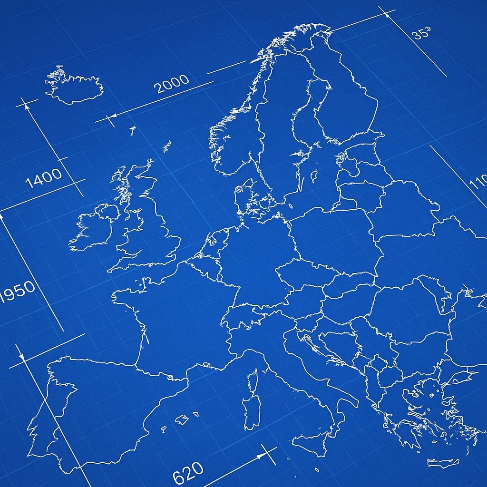
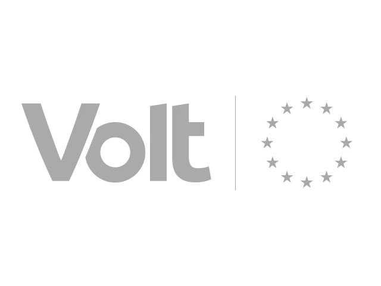
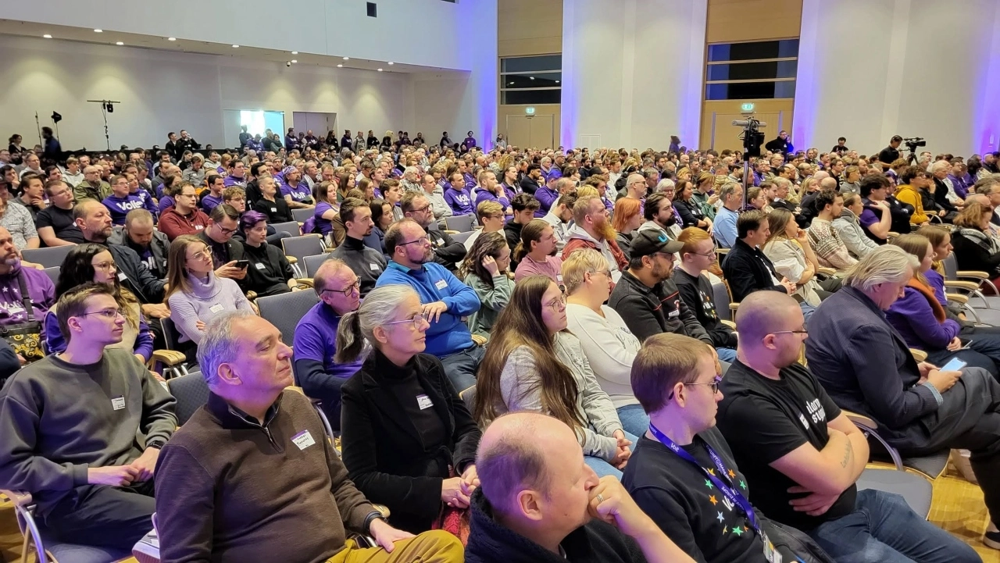
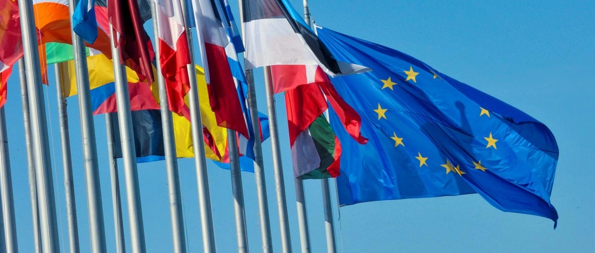

Leadership. Légitimité. Influence.
Une campagne transnationale.
Je me présente à la coprésidence de Volt Europa

Je m'appelle Sven Franck. Membre de Volt depuis 2018, je me présente à la coprésidence de Volt Europa pour co-diriger notre organisation qui compte plus de 35 000 membres dans plus de 30 pays européens. Notre élection aura lieu les 13 et 14 juin à Bratislava lors de notre Assemblée générale européenne.
Il s'agit d'une élection interne, c'est pourtant ce qui se rapprochera le plus d'une véritable élection paneuropéenne. En effet, même les élections européennes sont de nature nationale : si vous vous présentez en France, vous n'aurez pas besoin de convaincre les électeurs finlandais, et vice-versa. C'est précisément ce que je vais faire lors de ma campagne.
Et pour cause : dès 2022, le Parlement européen a voté en faveur de « listes transnationales » pour les élections européennes, dans lesquelles l’Europe constituera une seule et vaste circonscription. Comme tant d’autres réformes, celle-ci est encore bloquée par nos gouvernements nationaux qui, réunis au Conseil de l’UE, refusent toute avancée vers une Europe véritablement unie et démocratique.
Cela signifie que nous n’avons encore jamais fait l’expérience d’une véritable et authentique campagne transnationale. Je veux le découvrir, et je veux que Volt montre la voie.
Mon but : visiter des équipes locales dans 25+ pays
Rapprocher l'UE de ses citoyens revient à rapprocher Volt Europa de nos membres. J'ai dix semaines pour rendre visite aux équipes locales dans tous les États membres de l'UE, ainsi qu'au Royaume-Uni, en Suisse et en Albanie, où nous sommes déclarés comme parti politique. L'Allemagne et les Pays-Bas sont nos chapitres les plus importants en nombre de membres, je m'y arrêterai donc souvent. Dans certains pays, nous sommes encore en phase de développement, mais ce n'est pas une raison pour ne pas y aller. Ma campagne sera une campagne interne, mais tournée vers l'extérieur. Elle sera intense, avec parfois deux ou trois étapes par jour et de nombreux trajets en bus tard le soir ou tôt le matin.
Voici la carte de mes déplacements et mon calendrier. Ils seront régulièrement mis à jour :

Restez informé
Que vous soyez membre de Volt ou non, abonnez-vous à la newsletter de ma campagne (via Keila.io) et recevez des informations sur mes déplacements et sur la manière dont vous pouvez m'aider. Vous pouvez bien sûr aussi me suivre sur les réseaux sociaux, tandis que la newsletter vous donnera davantage d'informations et d'anecdotes.
cliquez iciMon message : Leadership. Légitimité. Influence.
L'Europe est à la croisée des chemins : de l’invasion de l’Ukraine par Poutine au risque de perdre le Groenland, en passant par les répercussions de la guerre en Iran, les défis n'ont jamais été aussi considérables. Pourtant, l'Union européenne reste faible et invisible. Nos chefs d'État sont paralysés par leur protectionnisme et leur peur de perdre le pouvoir. Tout comme « l'Amérique d'abord », c'est « l'Allemagne d'abord », « la France d'abord », « l'Italie d'abord », car aucune dirigeant, aucun dirigeant ne considère l'Europe comme une solution. Si seulement ils réalisaient quel poids une Europe unie pourrait avoir. Une Europe partageant le même message dans tous ses États membres, une Europe qui offrirait à ses citoyens sécurité et prospérité, une Europe capable de se défendre. Une Europe qui défendrait la démocratie et se tiendrait d'égal à égal avec les autres grandes puissances.
Cette Europe ne verra jamais le jour si nous continuons à compter sur les partis et les dirigeants nationaux. Existe-t-il des dirigeants européens ? Je crois qu’ils existent dans tous les États membres, mais ils n’ont aucune visibilité au sein des systèmes politiques nationaux. Si je suis élu, je veux que Volt devienne LA plate-forme du leadership européen dont nous avons besoin aujourd’hui et à l’avenir, pour que l’Union européenne franchisse la prochaine étape. Je veux faire de Volt Europa une force politique européenne, capable de définir la vision de ce à quoi l'Union européenne doit ressembler demain. Je veux asseoir la légitimité de notre projet en obtenant le soutien de nos chapitres nationaux partageant nos objectifs communs et en développant notre influence en faisant comprendre aux citoyens qu'une Europe plus forte ne verra le jour qu'avec un vote pour Volt. Aux niveaux européen, national et local.
Mon programme
Je prépare cette candidature depuis un certain temps (voir aussi mon initiative #jumpstartEU), car nous devons démarrer sur les chapeaux de roue avec seulement trois ans avant les élections européennes de 2029. J'ai défini 5 priorités sur lesquelles j'aimerais que Volt Europa se penche, et que je présenterai ici jusqu'au lancement officiel de la campagne en mai :
-

Volt, un modèle pour l'UE
(Comment tirer parti de notre organisation)
Volt est comme une mini-UE. Et si nous en faisions une mini-UE pleinement opérationnelle, démocratique et fédérale en suivant les lignes de notre programme ? Et si nous mettions en pratique ce que nous prônons et devenions notre propre « meilleure pratique » Nous disposerions alors d'un argument de poids pour convaincre les chefs d'État et la Commission de s'inspirer de notre modèle. En savoir plus. -

Objectif n° 2
(Comment faire en sorte que les citoyens se sentent européens)
À paraître le 7 avril. -
Objectif n° 3
(Comment dépasser les seuils électoraux et donner à nos députés européens le droit d'initiative législative)
À paraître le 14 avril. -
Objectif n° 4
(Comment influencer le choix des commissaires ou entrer au Parlement)
À paraître le 21 avril. -
Objectif n° 5
(Comment briguer la présidence de la Commission ou entrer aux Parlements nationaux)
À paraître le 28 avril.
Les objectifs de ma campagne
Outre l’envie de rencontrer nos membres dans le plus grand nombre possible de sections nationales, je souhaite travailler sur deux autres objectifs dans le cadre de cette campagne :
-

Une déclaration politique pour notre Assemblée générale de Bratislava, les 13 et 14 juin
(Motion)
Un Volt politique se doit d'avoir des messages politiques. Je dépose une motion afin de débattre et de voter sur une déclaration politique pour clôturer notre prochaine Assemblée générale européenne à Bratislava. Pour ajouter ce point à l'ordre du jour officiel, il faudra obtenir le soutien de 1 % des membres ; je dois donc trouver 350 membres pour soutenir ma proposition. En savoir plus. En savoir plus. -

9 mai – Une journée consacrée à l'actualité européenne
(Initiative)
Dans le cadre de ma campagne, j'aimerais également proposer aux journaux de consacrer le 9 mai à l'actualité européenne. Ne pas avoir à lire d'articles sur Trump serait un soulagement pour tout le monde. Découvrez l'initiative. Découvrez l'initiative.
Restez informé
Que vous soyez membre de Volt ou non, abonnez-vous à la newsletter de ma campagne (via Keila.io) et recevez des informations sur mes déplacements et sur la manière dont vous pouvez m'aider. Vous pouvez bien sûr aussi me suivre sur les réseaux sociaux, tandis que la newsletter vous donnera davantage d'informations et d'anecdotes.
S'abonner